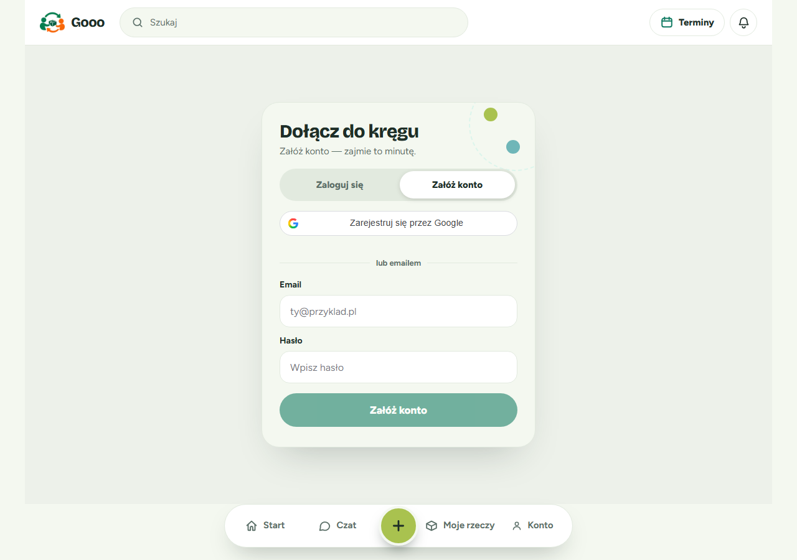
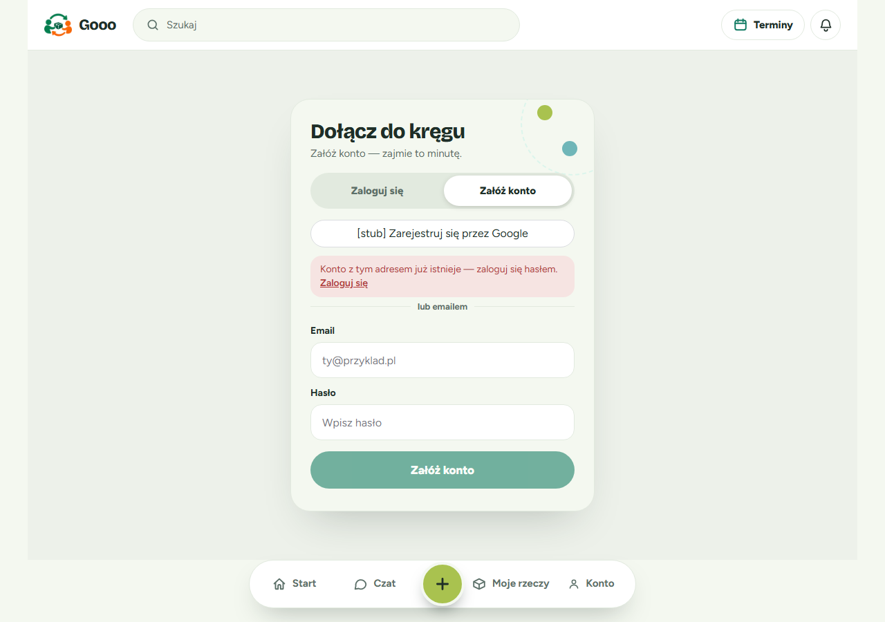
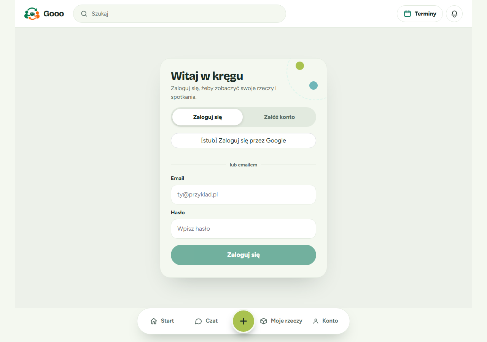
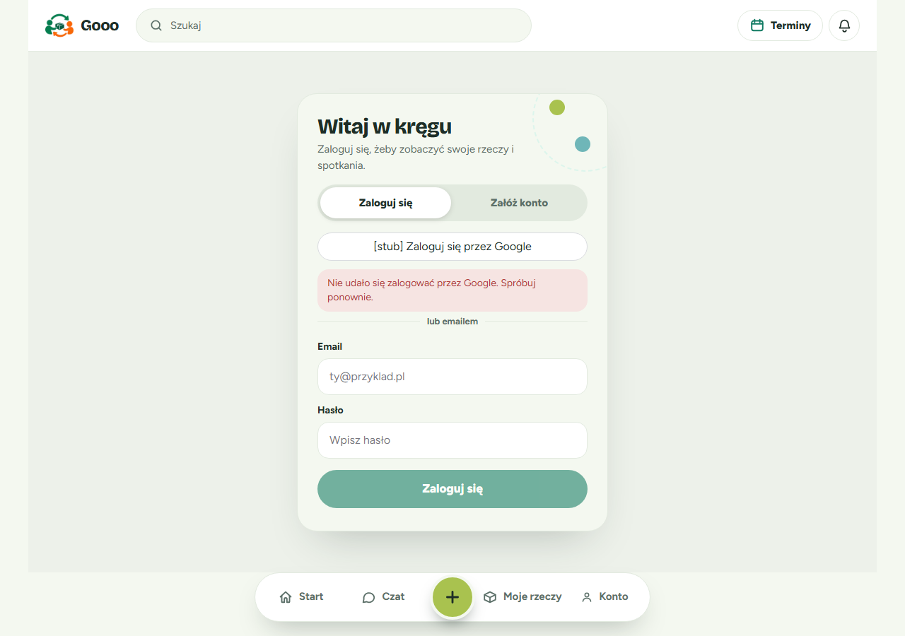
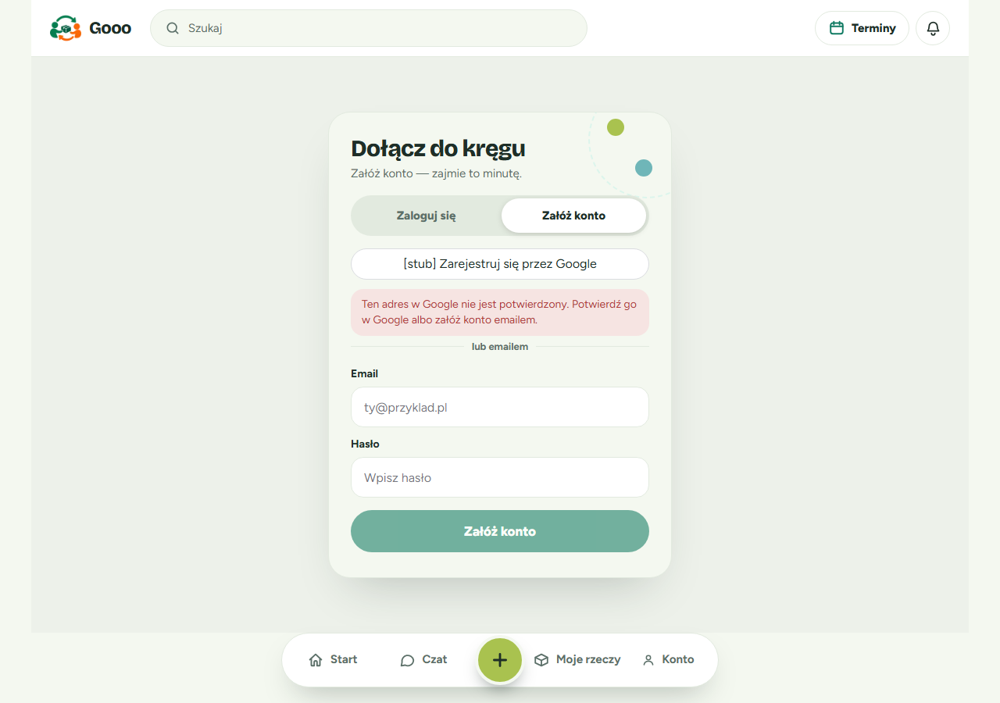
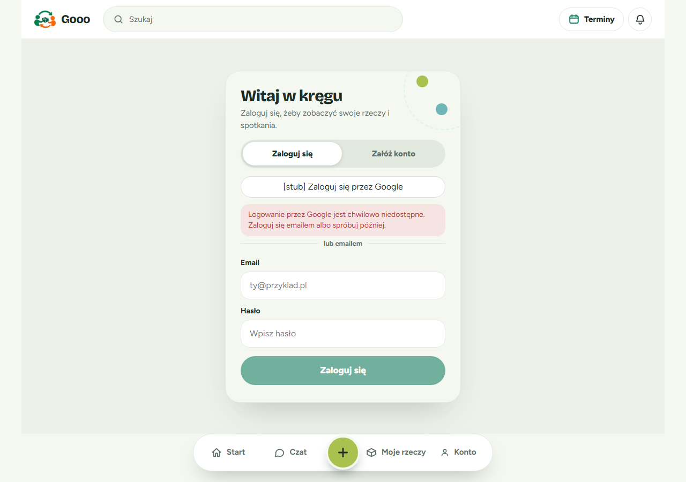
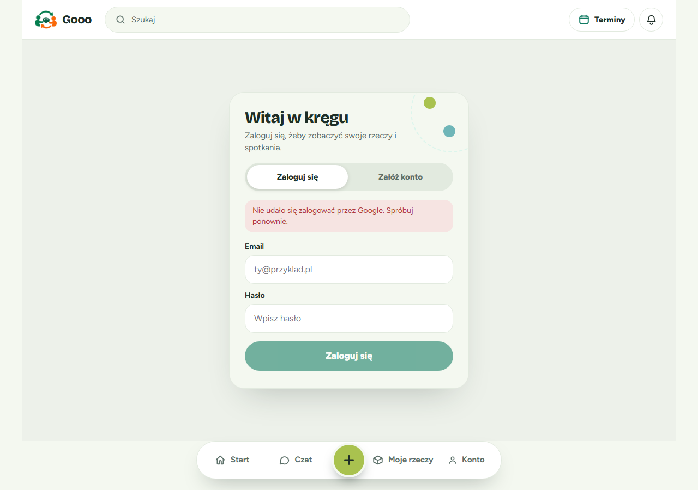
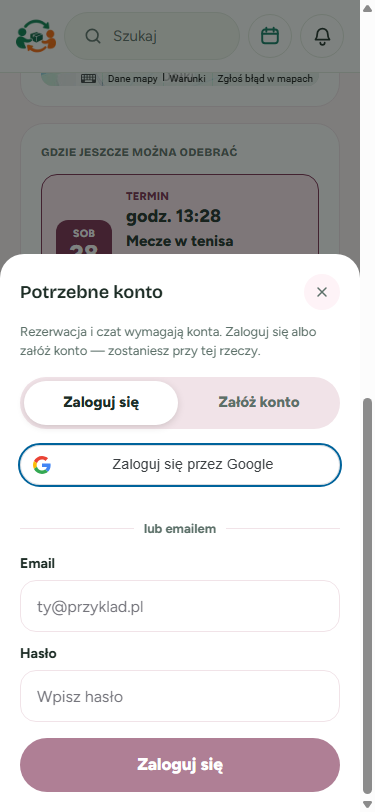
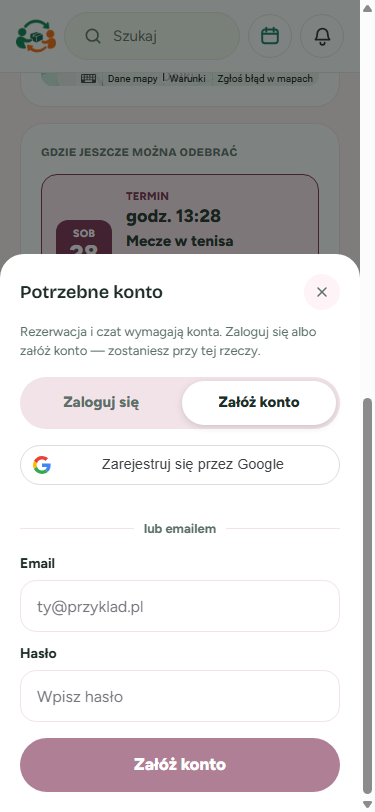

Verification scenarios
⚠️ 4.1 Login tab renders the GIS button
| # | Check | Result | |
|---|---|---|---|
| 1 | Pill above “lub emailem”, slot 382×44 | As specified | ✅ |
| 2 | GIS options signin_with / pill / outline / large / pl / width 382 | As specified | ✅ |
| 3 | Empty role=status line, 18 px | Present | ✅ |
| 4 | No Facebook; 1 GIS script tag | As specified | ✅ |
| 5 | Console clean | GIS iframe 403, “origin is not allowed” (M1) | ❌ |

✅ 4.2 Register tab shows signup_with
“Zarejestruj się przez Google”, text=signup_with. No new nonce across two tab switches. GIS console warning (m1).

✅ 4.3 Nonce request and cookie
POST body {} (JSON) → 200 {nonce}, Cache-Control: no-store. Set-Cookie aj_google_nonce; HttpOnly; Max-Age=600; Path=/api/auth/google; SameSite=lax; Secure (value not recorded). Extra field or no body → 400.
✅ 4.4 Loading skeleton
44 px animate-pulse rounded-full bg-line, aria-hidden, divider visible. Email field at y=486 while loading and when ready. The SSR HTML contains the skeleton, the status line and the divider, and no GIS script.

✅ 4.5 409 with inline “Zaloguj się” switch
Exact copy, with a type="button" switch on the register tab only. The switch moves to the login tab and clears the alert. An English 409 message falls back to the generic copy. After a failure: 1 nonce re-fetch, a re-initialize, and no POST retry.


✅ 4.6 401 / 403 / 503 / other statuses
All three copies match the spec table exactly; 400 and 500 show the generic copy. ux_mode: popup, auto_select: false, no prompt(). The form shifts +21 px under a 60 px alert, which is within SC8.



✅ 4.7 Hidden-with-error and in-flight guard
Two synchronous callbacks send 1 POST. A 401 followed by a nonce 503 leaves the mb-4 wrapper with just the alert.

✅ 4.8 Email-only fallback
Nonce 503 and an aborted GIS script both put the form directly under the tabs, with no divider, status line or alert. The no-client-ID build was not run (needs a rebuild).

⚠️ 4.9 AuthSheet at 375 px — focus and Esc
Tab order: Zamknij → tab → Google control → Email → Hasło, then back to the start; Shift+Tab goes the reverse way. Esc closes the sheet and returns focus to “Napisz o przedmiocie”. On the register tab: signup_with and no new nonce. The control that took focus was the GIS fallback div[role=button]; the iframe is 0×0 here (M1).



✅ 4.10 Real backend rejection
{"credential":"not-a-jwt"} → 401 with the generic Polish copy; the nonce cookie is cleared; a repeat without the cookie also gets 401.
❌ 4.11 Real Google popup sign-in (blocked — manual, pending owner)
Not executed: accounts.google.com automation is out of scope, and the origin is not authorised.
Discrepancies
| Severity | ID | Finding | Fix |
|---|---|---|---|
| major | M1 | OAuth client does not authorise http://localhost:5174; GIS iframe 403 (environment, not code) | Add the origins in Google Cloud Console; run the manual popup check |
| minor | m1 | “initialize() is called multiple times” on each tab switch (useGoogleSignIn.ts:171-197) | Separate the renderButton-on-tab effect from initialize |
| cosmetic | c1 | Error copy wraps to 2 lines (1 line in the mockup) | None needed |
Console & network
| Source | Message | Frequency | Severity |
|---|---|---|---|
| accounts.google.com/gsi/button | 403 Failed to load resource | every render | Major (M1) |
| gsi credential_button_library:88 | The given origin is not allowed for the given client ID. | every render | Major (M1) |
| gsi/client:88 | initialize() is called multiple times | every tab switch | Minor (m1) |
No first-party console errors.
Spec alignment
Partially: R14 success path not observed (needs a real Google credential).
Not implemented: none. Extra: none.
Exit criteria
| Criterion | Status | Evidence |
|---|---|---|
| SC6 — no client / 503 hides the block | ✅ | 4.8 (no-client-ID build not run) |
| SC8 — UI matches the seven mockups; alert shift bounded | ✅ | 4.1–4.9, visual fidelity |
| SC2 (runtime slice) — generic Polish 401 | ✅ | 4.10 |
| SC1/3/4 — real Google token paths | ❌ | 4.11 blocked, manual |
Recommendations
- Must fix before merge: none in code. Before release: M1 (origin config) and the owner's manual popup check.
- Should fix soon: m1.
- Nice-to-have: c1 (no action).